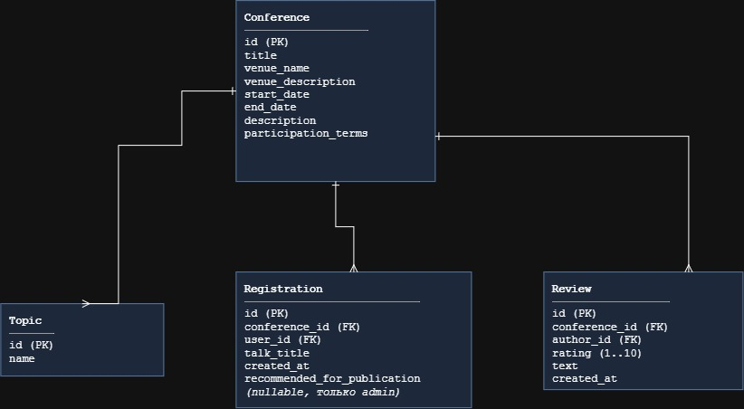
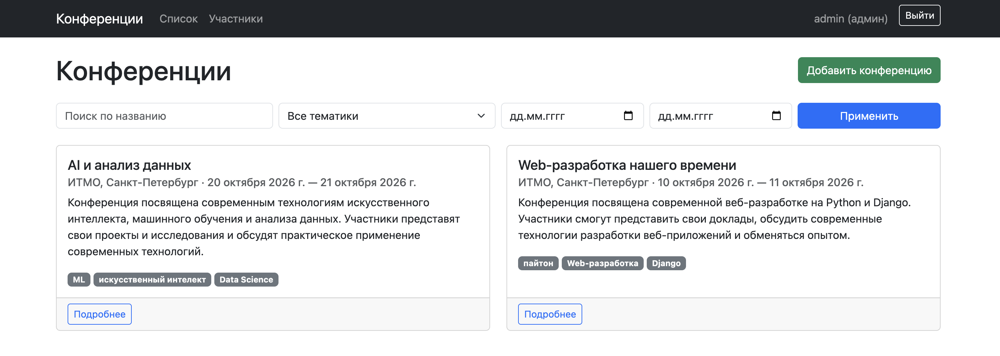
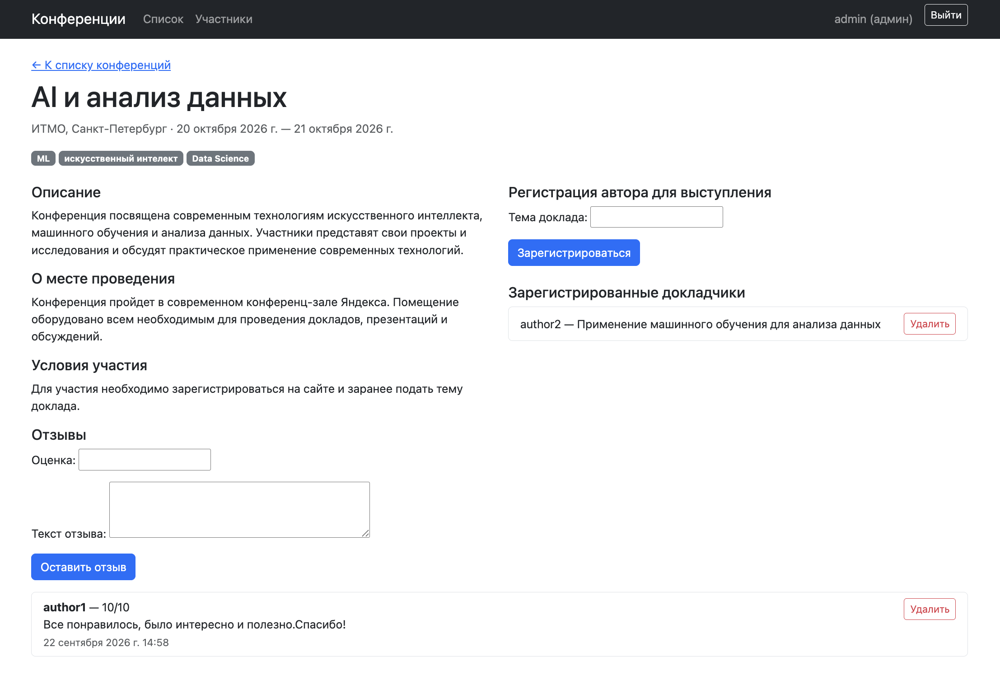
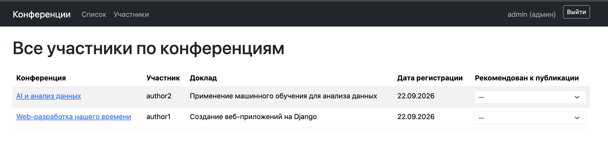
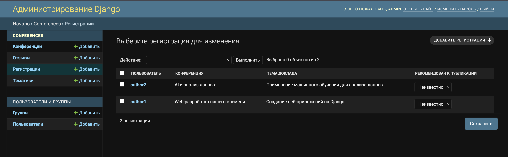
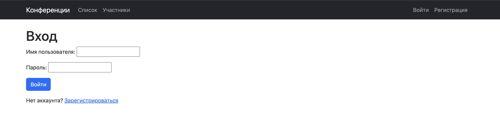
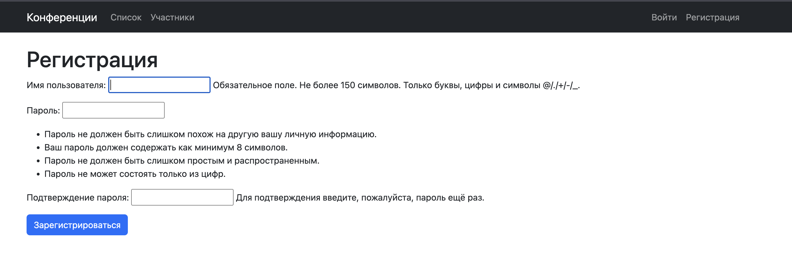
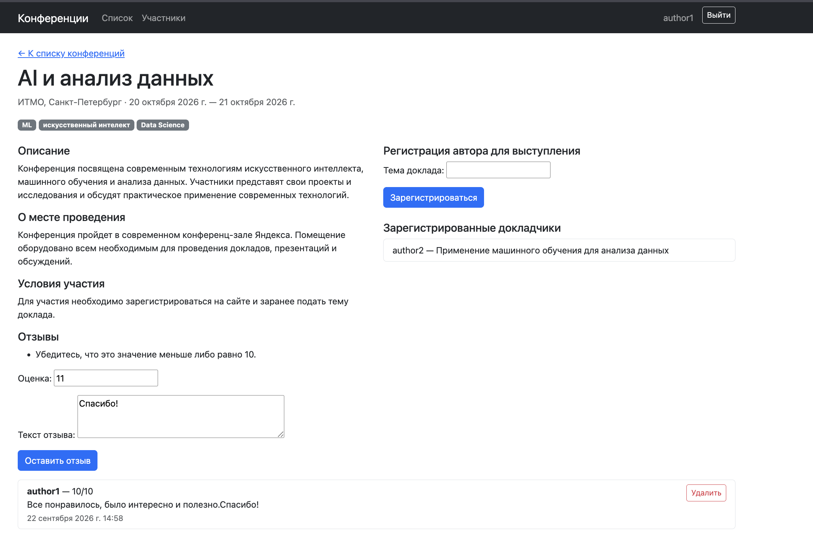

ЛР2 — модель данных, views, шаблоны, скриншоты
Модель данных
Четыре модели: Topic, Conference, Registration
(регистрация автора на выступление) и Review (отзыв). Registration и
Review ссылаются на пользователя через settings.AUTH_USER_MODEL
(стандартный User).

recommended_for_publication — nullable BooleanField: None — решение ещё
не принято, True/False — рекомендован/не рекомендован. Редактируется
только администратором (Django-admin и отдельный dropdown в клиентской
таблице участников).
Ключевые views
| View | URL | Тип | Доступ | Назначение |
|---|---|---|---|---|
ConferenceListView |
/ |
CBV ListView |
все | список конференций: поиск по названию, фильтр по тематике и датам, пагинация (paginate_by=6) |
conference_create |
/conferences/new/ |
FBV | только is_staff |
создание конференции с клиента (иначе PermissionDenied) |
conference_detail |
/conferences/<pk>/ |
FBV | все | карточка конференции + формы регистрации/отзыва |
registration_create |
/conferences/<pk>/register/ |
FBV | авторизован | регистрация автора на выступление |
registration_update / registration_delete |
/registrations/<pk>/edit\|delete/ |
FBV | владелец или is_staff |
редактирование/удаление регистрации |
review_create |
/conferences/<pk>/review/ |
FBV | авторизован | отзыв: рейтинг 1–10 + текст |
review_delete |
/reviews/<pk>/delete/ |
FBV | автор или is_staff |
удаление отзыва |
ParticipantsListView |
/participants/ |
CBV ListView |
все | таблица всех регистраций по всем конференциям, пагинация (paginate_by=10) |
registration_set_recommendation |
/registrations/<pk>/recommend/ |
FBV | только is_staff |
dropdown «рекомендован к публикации» прямо в таблице участников |
signup |
/signup/ |
FBV | все | регистрация пользователя (UserCreationForm) |
Права доступа проверяются на сервере во views.py с помощью @login_required , user.is_staff и PermissionDenied. Дополнительно в шаблонах элементы интерфейса скрываются от пользователей, которым соответствующие действия недоступны
Шаблоны
conferences/templates/
├── base.html — общий layout, навигация, Bootstrap 5 (CDN)
├── registration/
│ ├── login.html — вход
│ └── signup.html — регистрация пользователя
└── conferences/
├── conference_list.html — список + форма фильтра/поиска + пагинация
├── conference_form.html — создание конференции (staff)
├── conference_detail.html — карточка конференции, формы регистрации/отзыва
├── registration_form.html — редактирование своей регистрации
├── registration_confirm_delete.html — подтверждение удаления регистрации
├── review_confirm_delete.html — подтверждение удаления отзыва
├── participants.html — таблица участников + dropdown для staff
└── _pagination.html — переиспользуемый пагинатор (список + таблица)
Скриншоты
Список конференций — поиск, фильтр по тематике/датам, пагинация, кнопка «Добавить конференцию» видна только администратору.

Карточка конференции — описание, форма регистрации на выступление, список докладчиков, форма и список отзывов.

Таблица участников — /participants/, для администратора колонка
«Рекомендован к публикации» — выпадающий список (—/Да/Нет), у обычного
пользователя — просто текст.

Django-admin — список Registration с полем recommended_for_publication
как list_editable.

Вход / регистрация — вход выполняется с использованием стандартной формы Django AuthenticationForm, регистрация — с использованием UserCreationForm, поля переведены
на русский (LANGUAGE_CODE = 'ru').


Ошибка валидации — рейтинг отзыва вне диапазона 1–10 показывает понятную ошибку под полем, а не молча отбрасывается.
